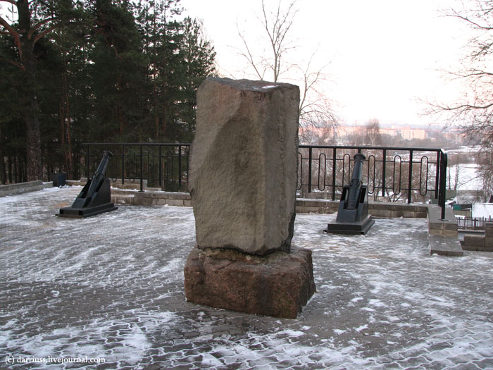
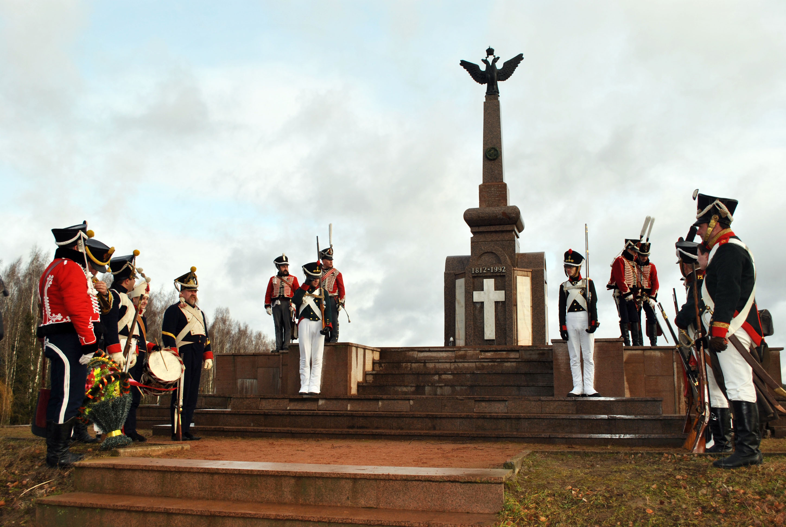
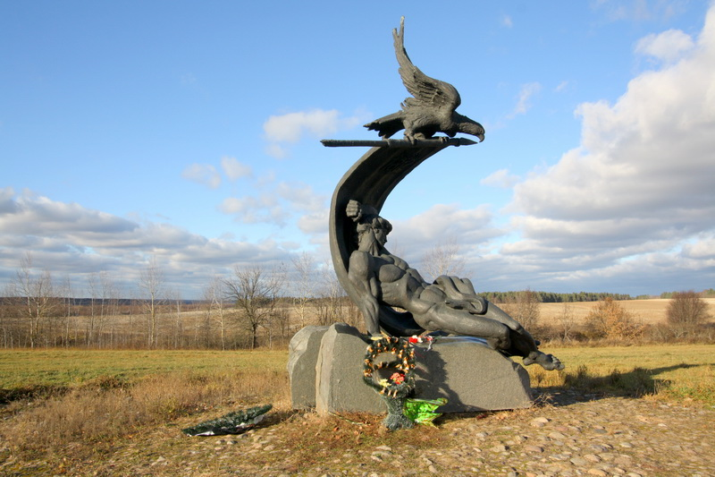

|  |
Батареи отечественной войны 1812 г.
Накануне отечественной войны 1812 года на правом берегу Березины перед мостом, на пути в Борисов началось строительство земляных укреплений с целью обороны города от возможного нападения врага. В то время город размещался только на левом берегу реки Березина. Здесь работали сапёры, а так же жители Борисова и окружных деревень. Планировалось установить артиллерийские батареи. До начала нашествия армии Наполеона их строительство не было закончено. Однако земляные укрепления — насыпи и рвы сыграли немаловажную роль в битве на Березине около деревни Студёнка в ноябре 1812 года. Они были использованы во время контрнаступления русских войск (Памятник в честь русских воинов). |
|  |
Брили
На берегах реки Березины под Борисовом на Брилевском поле решалась судьба всей Европы. Здесь писалась история - русская, французская, белорусская, польская, немецкая, швейцарская. В ноябре 1812 года во время переправы через Березину у деревни Студенка погибла значительная часть армии Наполеона. Березинская переправа близ Борисова, по свидетельству историков, стала самой мрачной страницей истории войн Наполеона. Потеряв около 50 тысяч человек, большую часть артиллерии и обозов, 26 ноября французская армия перестала существовать как организованная боевая сила. На Брилевском поле ежегодно воспроизводят сражение, которое произошло в ноябре 1812 года при переправе армии Наполеона через Березину. |
|  |
Памятник жертвам войны 1812 года в д. Студенка
Памятник жертвам войны 1812 года установлен близ деревни Студенка Борисовского района, на месте боев 26—29 ноября между французскими корпусами и русскими армиями Чичагова и Витгенштейна на обеих берегах реки Березина во время переправы Наполеона. В 2002 году у деревни Студенка, где в безымянных могилах нашли последнее пристанище более 8 тысяч представителей всех европейских государств, был открыт памятник-аллегория жертвам березинской трагедии 1812 года: на крестообразном постаменте из камней – античный юноша-воин, сраженный врагом, над его головой развевается знамя. Накренившееся древко подхватывает могучий орел, символизирующий воинскую доблесть. В основании трехтонного памятника из бронзы – огромные камни-валуны, которые отполированным черным гранитом напоминают темные, ледяные волны Березины. |